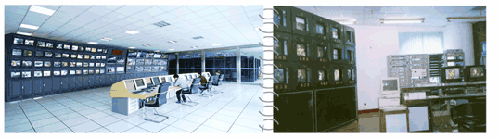

发展历程

1993年，连云港有线电视台成立，采用当时先进的550M邻频传输技术，传送15套电视节目，开始向城区居民提供有线电视服务。

1995年，实现了有线电视信号从市区至连云区平山45公里的光缆超远程传输，成为全省第一条长距离传输广播电视二级光缆网，也是第一个实现光缆长距离传输广播电视信号的地市级台。
1999年7月，开通连岛地区有线电视信号。
2001年9月，连云港有线电视台与电视发射台、中波发射台等机构合并为连云港市广播电视传输总台，承担城区(含郊区)的广播电视有线、无线服务与覆盖工作。
2002年，建立了有线电视地理信息系统，实现用户服务与管理的升级。
2005年，完成市区有线电视网络光缆化改造，在全国广电系统中率先实施有线电视光纤到楼、光纤到户。
2005年1月，开始向有线电视用户提供广电宽带服务。
2005年5月，正式启用的苏北地区一流的有线电视播出机房。
2007年12月，全市实现有线电视信号村村通。
2008年7月，江苏省广播电视信息网络股份有限公司成立，连云港市区有线电视服务职能划归江苏省广播电视信息网络股份有限公司连云港分公司。
2009年1月6日，江苏省广播电视信息网络股份有限公司连云港分公司正式揭牌。
2009年12月31日，连云港市区完成有线数字电视整体转换。
2011年11月，公司更名为江苏省广电有线信息网络股份有限公司连云港分公司。
2013年5月，郊区有线数字电视整体转换全面完成，郊区农民享受到与城区居民相同的高清互动、优质宽带等服务，广播电视率先实现城乡一体化，为郊区新农村建设作出了贡献。